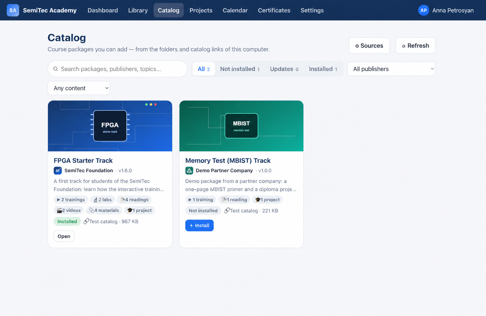
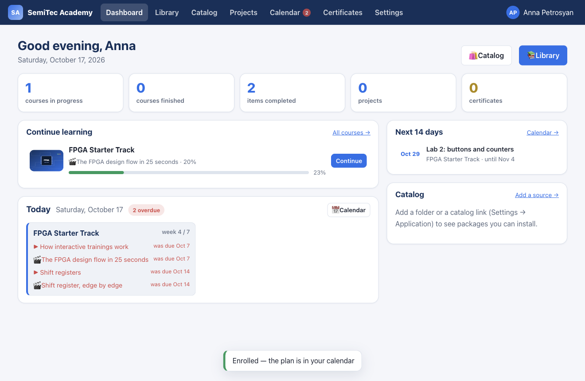
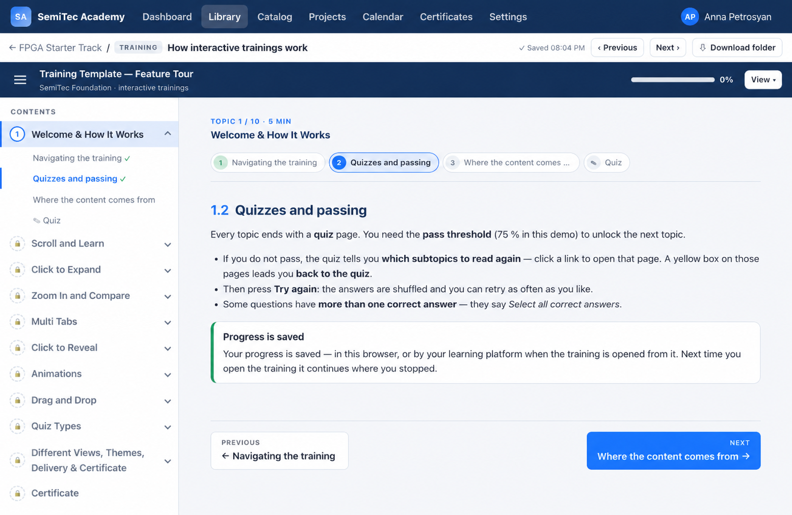
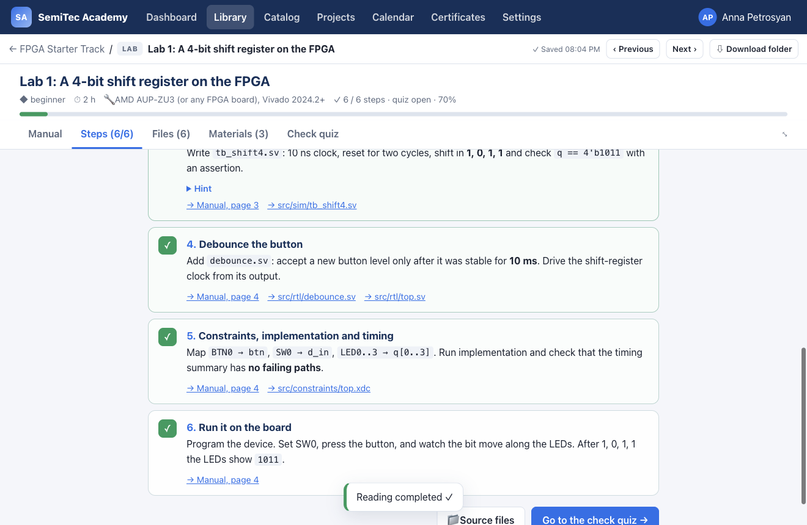
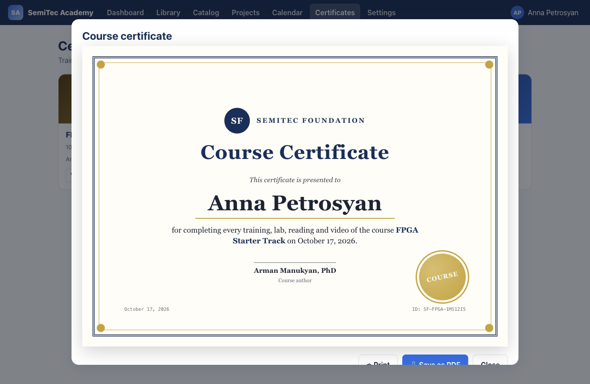

Standalone material
Keep a training, lab or project as its own editable folder. Learners can use it outside Academy.
Introduction
SemiTec Foundation
SemiTec Academy is a free, open-source desktop learning app for distributing course packages, studying them offline, and recognising completed learning.
One clear path
Packages can contain trainings, readings, labs, videos, materials and projects. A learner can use every item independently, or follow the author’s course order and study plan.
.stlp package.Local by design. Academy keeps accounts, packages and progress on the learner’s computer. A future platform can add organisation-wide sign-in and synchronization.
01 · Find materials
Universities, companies and the Foundation can publish catalog links. Learners choose a source, then search and filter packages by publisher, subject and content type.
.stlp file.Built in: the SemiTec Foundation catalog is set up in every Academy app. Each package the Foundation publishes in SemiTec Academy Materials appears there automatically, with no app update; new versions show as updates.

02 · Add with confidence
Academy checks the archive before it is added. It tells the learner what the package contains, which app version it needs, and the publisher details included by the author.
Academy checks before installing
Anyone can create and share a package. Learners choose which sources to use.

03 · Organise learning
Each learner has a local library of packages. The dashboard brings the next activity and the study plan together without hiding standalone materials.
Open materials by type, course order or week.
Follow dates chosen by the author, when a package includes them.
Resume exactly where you left off.
Export an item’s complete folder for offline use.
04 · Learn actively
Authors can create standard Academy trainings or flexible HTML, CSS and JavaScript experiences. Both forms can record progress and include quizzes when the author chooses.
A password-protected author preview can open all sections for review without changing learner progress.


05 · Apply knowledge
A lab can bring together its manual, source code, links and materials. A project works in the same way for a larger brief, while remaining a separately tracked activity.
The author may include feedback contact details, but Academy does not require supervision or an external approval process.
06 · Recognise achievement
A publisher can include a certificate for an individual training and/or for the whole package. If they do not define one, learners can still complete and use every item.
1Author chooses whether a training or package offers a certificate.
2Academy checks completion using real learning progress, including manual steps where required.
3Learner saves or prints the optional certificate created from the publisher’s HTML design.

For universities
SemiTec Academy is open source under Apache-2.0. Students use it on their own computers; there is no server to run, no licence fee and no sign-up with the Foundation.
.stlp file you share.Open and reviewable. The app, its package format and its tests are public on GitHub. Questions and feedback: open an issue or write to info@semitec.org.
For institutions and authors
Academy Templates help AI agents and authors create standalone labs, trainings and projects. Combine them into an .stlp package only when you want a complete course experience.
Keep a training, lab or project as its own editable folder. Learners can use it outside Academy.
Gather related materials into a validated package with a mandatory order and study plan.
Publish an index so learners can discover packages by your organisation and subject.
Share packages through your own catalog, a shared folder or directly with learners.
SemiTec Foundation
Download the Academy app, use the Templates to create material, or publish a catalog that serves your learners. Free and open source.
SemiTec Academy 2.2.0 · initial public release · Apache-2.0 · © SemiTec Foundation